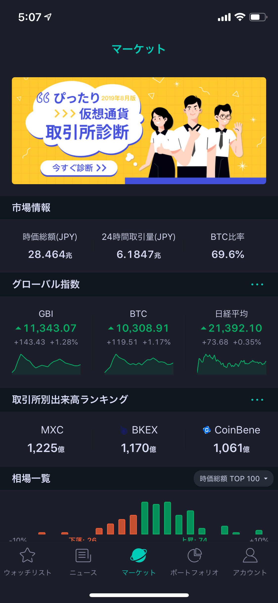
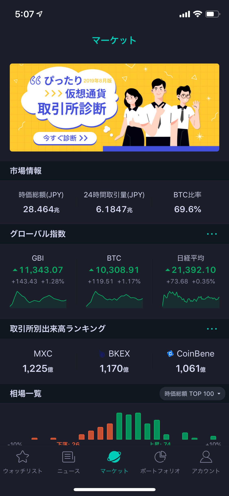
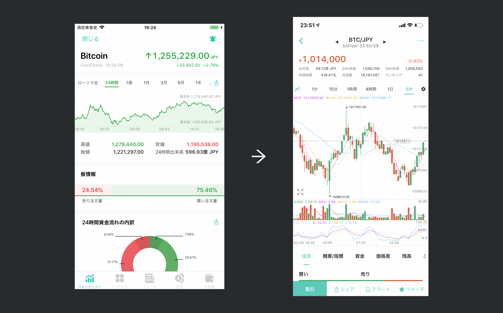

コイン相場ケーススタディ
近年、暗号通貨は急速に広まっています。
2017年後半、私たちのチームはいくつかのサイドプロジェクトを試しました。そのうちにコイン相場があります。 コイン相場は、暗号通貨のマーケティング情報提供を目指すアプリです。
デザイン目標
コイン相場のMVPバージョンは、iOSのネイティブストックアプリを模したものです。 そのような限られた機能では、競合他社を追い越せて相場のトップに立つ可能性もありませんでした。

私たちの目標は：
- ターゲットユーザーを満足させる暗号通貨APPを作成すること
- 暗号通貨のことが簡潔明瞭でユーザーに伝えること
- 日本で暗号通貨プラットフォームNo.1になること
私の役割
2017年10月から2019年9月まで、私はコイン相場のデザインリーダーを務めていました。プロダクトマネージャー、5人の開発者、4人のマーケティング同僚と一緒に仕事をしました。
私の具体的な仕事内容は：
- コイン相場の情報アーキテクチャを構築する
- アプリのユーザーエクスペリエンス（UX）をデザインする
- デザインシステムを維持し、開発者に最終デザインファイルを提供します
デザインの課題
目標がこのような質問に変わったと課題はより明確になりました：
- 初心者と上級者には何の機能が必要ですか？
- 初心者が暗号通貨ストックをすぐに使い始めるためにできることはなんですか？
- 新しいユーザーを獲得して維持し続けられる方法はなんですか？
- 事業を拡大するためにどのような方法で継続的な収益を得ることができますか？
それらに答えるために、ツイッターとオフラインでアンケートを配布してユーザーの要求を収集しました。 また、より多くの経験を得るために、よく似た分野として伝統的な株式市場も調査しました。


デザインハイライト
さまざまなレベルのユーザー向けのデザイン
質問1に回答するために、アンケートの結果とGoogleトレンドなどのデータツールを組み合わせて、アプリの各ステージで何が必要かを見つけました。

例えば、キーワード「ICO」は2017年後半に人気なものでしたが、ユーザーが効率的にフィルターを利用してICO情報を検索できるページをオンラインにしました。 このページは、最初は総ユーザーベースの20〜30％を占めていましたが、2018年後半には急速に人気を失いました。そして、私たちは徐々にページの重要度を減らし、最終的にそれを取り除いた。
1年間の調査とフィードバックを通して、最終的に主にこれらの機能をユーザーに提供しました。
 



初心者向け：ウォッチリスト, マーケティング, ニュース及び API 取引


上級者向け：ポートフォリオ、先物取引
ユーザーフレンドリー向けのデザイン
暗号通貨は、当時にユーザーにとって新しい概念でした。暗号通貨のコンセプトを迅速かつ明確にユーザーに伝えることは、大きな課題でした。
質問2に答えるために、いくつかの株式市場ストックアプリを調査して、ユーザーにとって重要なデータと情報を明らかにした。

また、アプリを使用する際のメインフローについて初心者向けのガイドをたくさん作りました。
成長向けの設計

質問No.3とNo.4に答えるために、成長エンジンとしてAARRRモデルを使用しました。
４つの例で各側面の行ったことを示します。


Referral & Acquisition: ユーザーの紹介と獲得を改善するために、強化スクリーンショットシェア機能がデザインされました。 ブランディングを追加し、QRコードでダウンロードすると、アプリを簡単に認識して利用開始できます。
Activation: アラートシステムとウィジェットでは、ユーザーの注意を定期的に引き付け、市場に何が起きているかについての貴重な情報を提供します。
Retention: ユーザーが競合他社のアプリに乗り換えるのを避けるため、乗り換えコストの高い機能が必要です。 そのため、ポートフォリオ機能がデザインされた。
Revenue: メンバーシッププランは、先物取引やAIアラートのような上級者レベルの機能を開発し、上級ユーザーから収入を得るのに役立ちました。
デザイン成果


コイン相場アプリは既に80万ダウンロードを超える最大級のサードパーティ暗号通貨市場アプリになった。また、AppStoreで9000以上の評価を獲得し、4.6つ星の高い好評を博しました。
https://www.coinjinja.com/coinview にアクセスする、または下記のビデオでアプリの詳細をご覧ください。